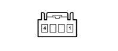

H042 DRIVER'S FRONT ELECTRIC WINDOW SWITCH (DASHBOARD)
- Path
- Electrical equipment > 3 CONNECTORS > H MANUAL ELECTRIC CONTROLS > H042 DRIVER'S FRONT ELECTRIC WINDOW SWITCH > H042 DRIVER'S FRONT ELECTRIC WINDOW SWITCH (DASHBOARD)
- Kind
- connector pinout (pin -> wire colour -> other end)
- Applies to
- all engines; all production periods; only with equipment: Right hand drive
- Interactive page
- https://sloeber94.github.io/elrnDB-fPnd/en/#/169003223
Applies to: all engines; all production periods; only with equipment: Right hand drive

Wiring | Colour |
|---|---|
BIANCO (white) |
Pin | Cable | Destination | |||
|---|---|---|---|---|---|
Sec.. | Colour | Node | Connect. | Pin | |
1 | 0,35 | HR (grey with red stripe) | 25 | ||
2 | 0,35 | LN (blue with black stripe) | 15 | ||
3 | 0,35 | NZ (black with violet stripe) | 6 | ||
4 | 0,35 | LG (blue with yellow stripe) | X | 4 | |
4 | |||||
3 | |||||